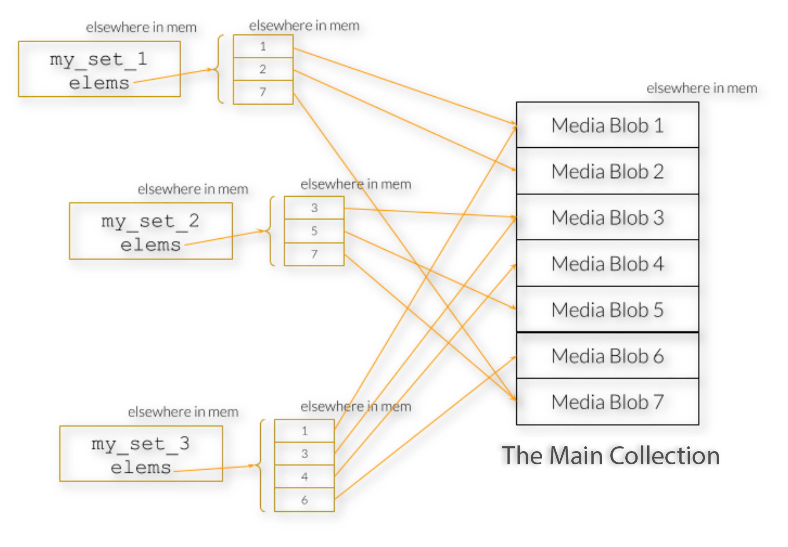

A First Hard Problem
In this module, we begin working with algorithm analysis by studying a problem that becomes difficult very quickly: the subset sum problem. Given a collection of elements, we want to find a subset that best satisfies some constraint.
The challenge is that the straightforward brute force approach grows exponentially. As the number of elements in the main collection increases, the number of candidate subsets grows like 2^N, which means the naive solution becomes impractical fast.
Pruning the Search Space
Rather than examining every possible subset equally, we will explore ways to prune the search space. The goal is not to change the underlying difficulty of the problem, but to avoid work that is clearly unnecessary.
These strategies help keep the algorithm useful for more realistic input sizes, even when the full brute force version would scale poorly.
Templates and Reusable Algorithms
This module also revisits C++ templates. Templates let us generalize our code so that the subset sum algorithm is not locked to a single concrete type.
Instead, we can design functions and classes that work with any datatype that meets the required operations. When a specific type is used, the compiler generates the concrete version we need from the template.
That gives us two useful ideas at once: better ways to think about algorithmic cost, and better tools for writing reusable C++ code.
Representing Candidate Subsets
One practical way to represent a subset is to store indices that point into a main collection. This lets multiple candidate subsets refer back to the same underlying elements without duplicating the full data each time.
